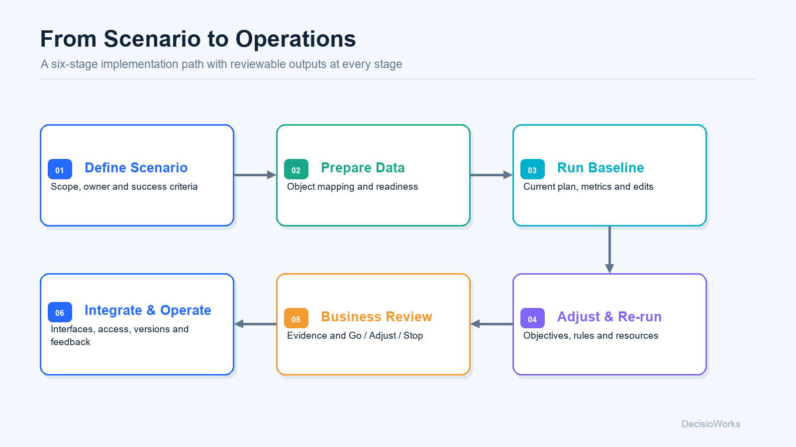

How do existing systems work with the toolkit?
| Stage | Work involved | Handoff |
|---|---|---|
| ERP / MES / files and shop-floor data | Confirm sources, owners, units, time and object identifiers | Field inventory and sample data |
| Standardized data interface | Map orders, routes and resources; validate relationships | Computable dataset and diagnostic records |
| DecisioCore + GOCK | Organize objectives, rules and execution; generate and analyze plans | Configuration, run status, result tables and explanations |
| Business application and human review | Check commitments, resources and execution arrangements | Decision to approve, adjust or retain |
| Execution feedback | Receive actual deviations and decide the next action | Evidence for updating data, rules or plans |
Without ERP or MES, you can begin with spreadsheets and files. With those systems in place, completeness of business meaning and relationships remains the central question. Reuse the mapping and workflow in ongoing operation, then extend them to further scenarios.
Who does what?
| Role | Main contribution | Assets to retain |
|---|---|---|
| Manufacturer | Business objectives, operating rules, data ownership and plan approval | Shared definitions, baseline and acceptance criteria |
| Consultant or industrial park | Problem diagnosis, scenario selection, data preparation and result communication | Diagnosis, priority scenarios and improvement path |
| Software partner, integrator or internal development team | Data connections, workflow integration, interfaces, deployment and operations | Mappings, integration code, industry application and operating instructions |
| DecisioWorks | Shared data structures, decision orchestration, optimization and analysis interfaces | Toolkit, open reference implementation, examples and documentation |
DecisioCore can serve as an implementation reference: reuse code, extend domain logic or write your own code to call GOCK. Connecting the parts responsible for business, models and applications gives future changes a clear place to be handled.
What does each stage produce?

| Stage | Key activity | Output |
|---|---|---|
| 1. Define the scenario | Agree scope, horizon, owner and business question | Scenario description and success criteria |
| 2. Prepare data | Check fields, units and object relationships | Mappings and gap list |
| 3. Run a baseline | Record current configuration and results | Reviewable baseline |
| 4. Adjust and re-run | Compare objective, rule or resource changes | Configuration differences and result comparison |
| 5. Business review | Check operational conditions, benefits and trade-offs | Evidence to continue, adjust or stop |
| 6. Integrate and operate | Connect systems, define approvals and collect feedback | Operating workflow, responsibilities and maintenance arrangements |
Where does value start to accumulate?
- Data assets: shared definitions for orders, routes and resources, with reusable mappings and checks.
- Decision evidence: turn verbal trade-off discussions into comparable configurations and results.
- Industry assets: partners build their own rules, workflows, applications and examples on shared capabilities.
- Ongoing operation: update the relevant data and rules as the business changes, retaining versions and feedback to improve planning over time.
Evaluate ROI against a consistently defined business baseline, such as planning effort, manual adjustments, delivery deviations and changeover losses. Include data preparation, integration and maintenance costs. Actual value depends on the scenario, data and execution conditions.
Bring five things to an initial discussion
- A recurring planning problem: the affected objects, time horizon and people.
- An anonymized data sample: fields, units, identifiers and missing values.
- A few key rules: what must be respected and what can be negotiated.
- An existing plan and its deviations: how you judge a good result.
- The people involved: who provides data, reviews results, integrates and operates the system.